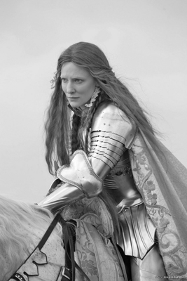
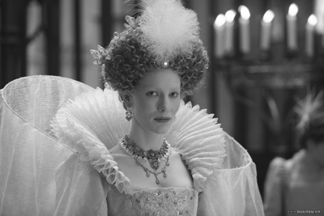
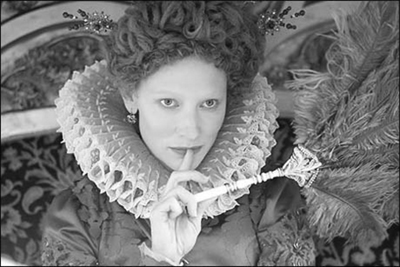
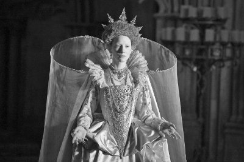

“Ben zaten İngiltere Krallığı ile evliyim!”
Elizabeth (Neden evlenmediğini sorgulayan Parlamento’ya hitaben)
Kraliçe I. Elizabeth’in iktidar yılları İngiliz tarihinde Altın Çağ (Golden Age) olarak anılır. İşte bu sebeple, devrinin üzerinden yaklaşık 4 asır geçmiş olsa da popülaritesinden en ufak bir kırıntı dahi dökülmüş değildir. Halen İngiltere’de monarşinin en sevilen simalarından ve tüm zamanların en saygın idarecilerinden biri olma özelliğini muhafaza ediyor. Daha hayatta iken efsane olmuş ve icraatları ile devrine damga vurmayı başarmıştı. Adanın ekonomik, politik ve dini çalkantılar denizinin ortasında ceviz kabuğu gibi sallandığı bir dönemde dümene geçmiş, ileride İngiltere’nin dünya gücü olarak sahneye çıkmasını sağlayacak ekonomik ve politik genişlemenin temellerini atmıştı. Protestanlığın adada kurumsallaşmasının altında da yine onun imzası vardı.
O bir kadındı. Tüm kudretine rağmen hakkında çok az şey bilinen, üzerindeki esrar perdesini kendi tebaasının bile kaldıramadığı bir kadın...
O bir aşk çocuğuydu...
Babası VIII. Henry, 18 yaşındayken kral olmuş, İspanya Kralı Ferdinand ile Kraliçe Isabelle’in hayatta kalan tek kızları Catherine ile bir ittifak evliliği yapmak zorunda kalmıştı. Lakin gönül ferman ya da siyasi evlilik dinlemiyordu ve krallar da âşık olurdu. 25 yaşındayken, Elizabeth’in annesi olacak Anne Boleyn’e âşık oldu. Catherine’den ayrılıp onunla evlenmek istiyordu ama heyhat; İngiltere, diğer Batı Avrupa ülkeleri gibi Katolikti ve bu evliliğin gerçekleşmesi için Katoliklerin ruhani lideri Papa’nın izni gerekiyordu. Papa izin vermedi. İspanyollar da bu boşanmaya karşı çıkıyorlar, Kraliçe Catherine üzerinden İngiltere’yi el altında tutmaya devam etmek istiyorlardı.
Kral Henry hem aşkına karşı çıkılmasına hem de ülkesinin iç işlerine çomak sokulmasına öylesine kızdı ki radikal bir şey yaptı: Aşkı için ülkesinin dinini değiştirdi! Daha birkaç yıl önce ülkesinde Martin Luther’in tüm kitaplarını yaktıran, Protestanları idam ettiren ve ‘Dinin Savunucusu’ unvanıyla Papa’nın övgüsünü alan Kral Henry, yeni bir kilise ve mezhep kurdu: Anglikanizm. Ve hemen ardından da aşkı Anne ile gizlice evlendi. Aynı yıl, 7 Eylül 1533’te Greenwich Sarayı’nda Elizabeth doğdu.
Doğmasıyla birlikte çilesi de başlayacaktı Elizabeth’in. Pek de hoş karşılanmayan bir bebek oldu. Özellikle babası, “Bu da nerden çıktı şimdi!” havasında, büyük aşkı Anne’e bakıyordu öfkeli gözlerle. Zira Henry’nin, ilk eşi Catherine’den zaten Mary isimli bir kızı vardı ve adamcağız, kendisinden sonra tahtını emanet edebileceği erkek bir evladın yolunu gözlüyordu. Yeni bir evlilik uğruna ülkesinin dinini bile değiştirmişti, ama ortalıkta henüz bir erkek çocuk yoktu!
Tüm bu manevraların üzerine Elizabeth’in doğumu evdeki planı çarşıya uydurmaya yetmemiş, ‘istenmeyen misafir’ Elizabeth’in zavallı annesi, kralı bir erkek çocuğundan mahrum bıraktığı için, zina ve ensest gibi uyduruk iddialarla boynunu celladın önüne eğmek zorunda kalmıştı. Kadıncağızın henüz kanı kurumadan, kralla yaptığı evlilik geçersiz sayılmış, zavallı Elizabeth, tıpkı kız kardeşi Mary gibi, ‘gayrimeşru’ ilan edilerek, tahttan mahrum bırakılmıştı.
Üvey anne ellerinde büyüyen kraliçe
Annesiz ve ‘istikbalsiz’ bırakılan Elizabeth’in çocukluk yılları, birbiri ardına gelen üvey annelerin dizleri dibinde geçecekti. Önce, krala çok arzuladığı erkek çocuğu Edward’ı doğuran, ama doğum esnasında ölen Jane Seymour; ardından Cleves hanedanlığından Anne; yine kellesinden olan Catherine Howard ve son olarak da Catherine Parr, Elizabeth’in çocukluğuna damgasını vuran kadınlar olmuştu. Kimi tarihçilere göre Elizabeth’in tarihe ‘bakire’ olarak geçmesinin ve evliliğe uzak durmasının altında da, babasının başından geçen bu hızlı evlilik trafiğini çevreleyen dramatik kareler ve gelinlerden ikisinin kellesinden olması gerçeği yatıyordu! Ya da bazı İngiliz tarihçilerinin dillendirdiği gibi, o dönem kadınlarının korkulu rüyası ‘doğururken ölmek’, Elizabeth’i, bekârlığa mahkûm etmişti.

Elizabeth, The Golden Age filminden bir kare.
Her ne kadar kraliçenin evlilikle ilgili kesin rezervleri olmasa da politik ve dini ayrılıklar damat adaylarının elenmesine yol açıyordu. Ya da politik arenanın erkekler tarafından tekelleştirildiği bir dönemde, kraliçenin, yetkilerini bir erkekle paylaşmadaki isteksizliği, bekârlığının sebeplerinden biri olabilirdi, kimbilir?
Elizabeth, çocuk yaşta oldukça sıkı bir eğitim almıştı. William Grindal ve Roger Asham gibi, dönemin önde gelen hocalarının rahle-i tedrisinden geçmiş bu genç kızın ‘seçilmiş’ olduğuna dair söylentiler almış yürümüştü. Genç kızlığa adımını attığında, 5 dili gayet akıcı bir şekilde konuşabiliyordu.
İlk gençliği de çocukluğu gibi gergin bir ip üzerinde geçecekti. Kral babası hayatta iken politik çalkantılardan bir nebze korunuyor olsa da, onun 1547 yılının Ocak ayında ölmesiyle işin rengi değişecekti. Bu arada tahta VI. Edward geçmişti ama VIII. Henry, gayrimeşru olarak etiketlenmiş kızları ile taht arasındaki engeli, ölmeden önce kaldırmıştı. Buna göre Edward’ı Mary, Mary’yi ise Elizabeth izleyecekti. Lakin bir sorun vardı. Edward henüz 9 yaşındaydı ve koskoca İngiltere’nin bacak kadar bir çocuğa bırakılması düşünülemezdi. Dayısı Edward Seymour, ipleri eline alarak İngiltere’nin hamiliğini (Protector of England) üstlendi. Bu arada kardeşi Thomas Seymour, ağabeyini kıskanmakta gecikmemiş ve kendi çapında darbe planlarına başlamıştı bile. Ancak çocuk kralı kaçırıp kontrolü ele geçirme tezgâhı suya düşünce, kellesine veda etmek zorunda kalacaktı. Bu arada idam edilmeden önce Elizabeth ile evlenmek istediğini de saklamamış, (Evet o dönemlerin İngilteresi’nde kızların 12 yaşında olması, evlilik için yeterli sayılıyordu) bir bakıma kızcağızın da başını yakmıştı.
Herkes Elizabeth’in de darbe tezgâhının bir parçası olduğunu düşünmeye başlamıştı. Üstelik tahtın varislerinden birinin kral ve konseyinin onayı olmadan evlilik lafını etmesi, her babayiğidin harcı değildi. İşin ucunda kelleyi kaybetmek dahi vardı. Sonuç olarak 15 yaşındaki Elizabeth’in, sorgucularını, başarısız darbe ile ve darbecinin evlilik planları ile kendisi arasında bir ilgi olmadığına ikna etmesi biraz zaman alacaktı. İlginçtir, Elizabeth’e göz koyan ihtiraslı ama kifayetsiz Seymour’un, Elizabeth’in son üvey annesi Catherine Parr ile de ilişkisi vardı! İşte genç Elizabeth, böylesi garip bir ilişkiler ağı ve güç oyununun tam ortasında kalmıştı. Üstelik çilesi henüz daha yeni başlıyordu...
Edward, 1553’te sağlık sorunlarından dolayı ölünce, ihtirası aklını gölgeleyen Mary’ye tahtın yolu açıldı. Mary isminin önünde kraliçe titrini görmek için uzun süredir pusuda bekliyordu. Ancak ülkenin dini rotasını tekrar Katolikliğe kırmak istediği ve üstüne üstlük İspanya Kralı Philip ile siyasi bir yaptığı için halkı tarafından benimsenmemiş, eli maşalı bir kraliçe olup çıkmıştı. 1554’te Thomas Wyatt ve adamları Mary’yi devirmek için ayaklanınca, Elizabeth bir kez daha şüpheleri üzerine çekecekti.
Mary, Protestan üvey kardeşinden fena halde rahatsız oluyordu. Yardakçılarının telkinleriyle Elizabeth’in darbecilerle ilişkili olduğu yönünde ikna edilmesi zor olmayacaktı. Her ne kadar darbenin Elizabeth’i tahta çıkarmak için yapıldığına ya da Elizabeth’in bu girişimde parmağı olduğuna dair kesin bilgiler yoksa ve Elizabeth masum olduğuna dair diller dökse de nafileydi. Mary kalemi kırmıştı.
Elizabeth, tutuklanarak meşhur Londra Kulesi’ne tıkıldı. Mary ve yandaşlarının Elizabeth’in idamını görmek için can attıkları malumdu, ama elde sağlam bir delil yoktu. Üstelik çilekeş Elizabeth’in halk arasındaki popülaritesi zaten yüksekti. Mazlumluğunu perçinlemek, pek de akılcı olmazdı. Mary ihtiraslıydı, ama bu kadarını göremeyecek de değildi.
Londra Kulesi’nde iki ay kalan Elizabeth, oradan, bir yıl kalacağı, Oxfordshire’daki Woodstock Malikânesi’ne sürgün edildi. Koca malikânede sadece kendisi ve hizmetkârları vardı. Çocukluğunun geçtiği Hertfordshire’daki eve ise daha sonra Mary’nin kocası İspanya Kralı Philip’in ısrarıyla dönebilecekti. Uyanık Philip, Mary’nin sağlığının pek iyi durumda olmadığının farkındaydı ve onun ölmesi durumunda tahta geçecek olan Elizabeth’in dostluğunu garantilemek, böylelikle de İngiltere ile ülkesi İspanya arasındaki sıcak ilişkileri sürdürmek istiyordu.

1558’de tahta geçen I. Elizabeth İngiltere’yi tam 45 yıl yönetti. Elizabeth, The Golden Age
Hapisten tahta uzanan çileli yol...
Mary, ruhunu Azrail’e teslim ederken talih, Elizabeth’e gülüyor ve Elizabeth 17 Kasım 1558’de, 25 yaşında, İngiltere’nin en kudretli ismi oluyordu. Ömrü iftiralarla, görmezden gelinerek, sürekli saf dışı edilmek istenerek geçen genç kadın açısından bu durum tam anlamı ile bir zaferdi. Külkedisi nihayet tahta çıkmıştı! Babasının ölümünden bu yana kendi ruhu içine hapsolmuş genç kadın, önünde açılan bu iktidar sahasını tepe tepe kullanmakta gecikmeyecekti. Başta at binmek olmak üzere, kendini spora verdi. Ayı avına çıkıyor, atmaca ve şahin besliyor, şövalyelerin müsabakalarını izlemekten zevk alıyor, şatafatlı maskeli baloların tadını çıkarıyordu. Dans ve müzikten de hoşlanıyor, üstelik davetlerde kendisi de enstrüman çalmaktan geri durmuyordu. Bu tür faaliyetleri günah olarak tanımlayan Püriten din adamlarının söyledikleri ise bir kulağından bile girmiyordu açıkçası. Üstelik ruhban sınıfının tiyatroların kapatılması çağrısına rağmen, oyun izlemekten zevk alıyordu. İzlediği serbestlik politikası, edebi açıdan şaheserlerin filizlendiği bir dönemi yol açacaktı.
1559’un 15 Ocak’ında taç giyen Elizabeth takip eden aylarda Protestan kilisesini tekrar canlandırdı ve değeri düşen İngiliz parasını ayağa kaldırdı. Bu arada belki kadınların kilisenin başı olamayacağına inananların, belki de Katoliklerin gönlünü almak için, babasının aksine, kilisenin yüce başı (Supreme Head) olmaktansa, yöneticisi (Supreme Governor) olmayı yeğledi.
Dini inançlarına dair kesin bilgiler olmamakla birlikte, Protestan kilisesini canlandırması sağlam bir veri kabul edilebilirdi. Evet, yürekten inanan bir Protestandı Elizabeth, neredeyse her gün dua ederdi. Kendine ait şapelde mumlar ve haçlar olmasına özen gösterir, kilise müziğinden hoşlanırdı. Üstelik o günlerde Protestan kiliselerinde moda olan şatafatlı ibadetlerin aksine geleneksel yöntemleri tercih ediyordu. (Elizabeth, The Golden Age isimli filmde kraliçenin Tanrı ile ilişkisinin bu minvalde başarılı bir şekilde resmedildiğini hatırlatmak isterim.)
Kraliçe’nin ılımlı bir mizacı vardı. Dini aşırılıklardan hoşlanmadığı gibi, hiçbir İngiliz’in de dini inançlarından dolayı eziyet çekmesine izin vermemiş, üstelik çevresinden gelen telkinlere rağmen Katoliklerin inançlarının gereklerini rahatça yerine getirmelerini istemişti. Yine de iki mezhep arasındaki siyasi tansiyon, bazen yönetiminin Katoliklere karşı daha sert bir çizgi izlemesine de sebep olmuştu.
Tahta çıkmasıyla birlikte evlilik teklifleri yağmur gibi yağmaya başladı Elizabeth’e. Ama o, bunlardan hiçbirine yanaşmadığı gibi, evliliği politik arenada bir kılıç keskinliğinde kullanmaya başlamıştı! Ya evlilik tekliflerine sıcak baktığını ima ederek olası düşmanlarını yumuşatıp onlarla ittifak kuruyor, ya da teklif sahiplerini, düşmanlarından biri ile evleneceğini ima ederek korkutuyordu! Ama nihayetinde o da bir kadındı ve kalbi iki kez evlilik düşüncesine teslim olur gibi olmuştu. Kalbini ilk titreten, bir zamanlar Londra Kulesi’ni de paylaştığı Leicester Kontu Robert Dudley’di. İkili uzun zamandır birbirini tanıyordu. Kont, belki de Kraliçe Elizabeth’in tek aşkı olarak isimlendirilebilirdi. Ama politik açıdan onunla evlenmesi bir facia olabilirdi. Zira Kont, şaibeli bir adamdı. Kraliçe’yle evlenmek için kendi karısını bile öldürdüğü söyleniyordu. Üstelik İngiltere’ye bağlılığı da su götürürdü. Sonuç olarak devletin bekası Elizabeth’in kalp titreşimlerini bastırdı.
Elizabeth’in kalbini olmasa da kocası unvanını alabilecek bir diğer isimse, Fransa tahtının varisi, Alençon Dükü Francis’ti. Bu evlilik ihtimali de politik hesapların ağına takıldı ve Kraliçe, bir başınalığa mahkûmiyetini devam ettirdi.
Evlenemiyordu ve çocuğu yoktu. Bu, Elizabeth’ten sonra İngiltere’nin başsız kalması demekti! Öte yandan çocuğu olsa da bu her şeyi çözecek değildi. Katoliklerin gözünde Elizabeth zaten gayrimeşruydu ve tahta hiç çıkmamış olması gerekiyordu. Onların gözündeki asıl kraliçe, tahtı gerçekten hak ettiğine inandıkları, aynı zamanda Elizabeth’in de kuzeni olan İskoç Kraliçesi Mary idi. Özetle, Elizabeth’in Mary’lerden çekeceği henüz bitmemişti!
Elizabeth’in çocuğu olup olmaması bazı çevreler açısından hiç mi hiç önemli değildi; onlar Mary’yi başa geçirmek için düğmeye basmışlardı bile. Ama bir sorun vardı: Mary o esnada Elizabeth’in gözetimi altındaki bir yerde tutuluyordu. İskoçya’daki berbat yönetiminin ardından oğlu adına tahttan feragat edip ülkesini terk etmiş, İngiltere’ye sığınarak idaresini tekrar tesis etmek için Elizabeth’ten yardım istemişti. Elizabeth de hem onu düşmanlarından hem de kendisini ondan korumak adına, devrik kraliçeyi göz hapsine aldırmıştı. Mary, yaklaşık 20 yıl kadar göz hapsinde kaldı. Bu zaman zarfında çevresindekiler Elizabeth’e kuzenini idam ettirerek, potansiyel bir rakibi ortadan kaldırmasını telkin ettilerse de o, bunlara prim vermeyecekti. Ta ki Mary’nin, kendisini İngiliz tahtına çıkarmayı hedefleyen ve koyu Katoliklerin mimarı olduğu Babington komplosuna dâhil olduğu anlaşılana kadar. Elizabeth’in ajanları komployu deşifre edince, celladın pıhtılaşmış kanla boyalı keskin baltası, Fotheringay Şatosu’nda Mary’nin kafasını gövdesinden ayırdı. Devrik kraliçe kellesinden, Elizabeth ise kuzeninden olmuştu.
“Biliyorum, zayıf bir kadının bedenini taşıyorum...”
İspanya Kralı Philip ile Elizabeth arasındaki ilişki yumuşak bir zeminde başladıysa da 1560’da Elizabeth’in İspanyol işgaline karşı ayaklanan Protestan Hollandalılara verdiği destekle hava gerilmiş, zaman içinde ikili karşı karşıya gelmişti.
Takvimler 1588 yılını işaret ederken, birbirlerinin gözünü oyacak kıvama gelmişlerdi. Bu gerginliğin bir başka sebebi de Philip’in bir türlü Elizabeth’i kendisi ile evlenmeye ikna edememiş olmasıydı! Evet, ihtiraslı İspanya Kralı, kız kardeşlerden biriyle olmaz ise diğeriyle, bir şekilde İngiltere üzerinde söz sahibi olmak istiyordu. Bir belagat ustası olan Elizabeth ise bir yandan ‘eniştesini’ oyalarken, diğer yandan da emri altındaki John Hawkins ve Francis Drake gibi meşhur korsanlarla İspanyol filolarını yağmalatıyor, hazinesini dolduruyordu.
İspanyollar tarafından ‘Bilinmeyen Dünyanın Baş Hırsızı’ olarak isimlendirilen Drake, Elizabeth’in gözde şövalyelerinden biriydi ve kellesine Philip tarafından günümüz parasıyla 10 milyon dolar ödül konulmuştu. Philip zaten yıllardır İngiltere’yi işgal etmekten, ülkeyi tekrar Katolik yapmaktan ve Elizabeth’i tahttan indirmekten bahsediyordu; bunun üzerine bir de Mary’nin idamı, kendisine uzun zamandır beklediği fırsatı fazlasıyla sağlamıştı. Artık tahta Mary’yi geçirme söylemini bir kenara bırakmış, İngiltere’yi doğrudan kendisi adına ister olmuştu. Zira İngiltere’deki hükümet, yıllar önce, damadın İngiltere’nin yönetimine karışmaması koşuluyla, Mary ile Philip’in evliliğine yeşil ışık yakmıştı. Philip hiçbir zaman Mary’ye karısı gözüyle bakmamıştı. Adaya evlenmeye giderken bile etrafındakilere, “Düğüne değil, sefere çıkıyorum” diyecek kadar iktidar hırsıyla davranıyordu. Tek derdi, tahta çıkaracağı bir varis vasıtasıyla İngiltere’yi Roman Katolik etki sahasının içinde tutmaktı...

İktidarı boyunca İngiltere’ye Altın Çağı’nı yaşattı. Elizabeth, The Golden Age
1588’in Mayıs ayında Calais açıklarına bakanlar, devasa İspanyol donanmasının heybetinden ürkeceklerdi. Zira yaklaşık 130 gemi ve 40 bin askerden oluşan dev İspanyol donanması, neredeyse ufuk çizgisini kaplamıştı. Philip, yıllardır ağzında gevelediği tehdidi nihayet hayata geçirmişti. Elizabeth’in sarayında ise panik havası yaşanıyordu. Ama Kraliçe’nin eski ‘eniştesi’ fakat yeni ‘düşmanı’ Philip’e pabuç bırakmaya niyeti yoktu. Zırhına bürünerek atını cepheye sürdü. Bizzat Tilbury’de ziyaret ettiği birliklere, zırh kuşanmış hali ile atının üzerinden şu tarihi cümlelerle sesleniyordu:
“Farkındayım. Zayıf ve kırılgan bir kadının bedenini taşıyorum; ama bir kralın kalbine ve cesaretine sahibim. Bir İngiliz Kralının!”
Cesur ve mağrur çıkışı ile askerlerine moral veren demir leblebi, akılcı taktikleri, özel tasarımlı gemileri ve denizde patlak veren fırtınanın da yardımıyla, Philip’in donanmasını bozguna uğrattı. Böylelikle bir kadının sadece ülkeyi değil, aynı zamanda orduyu da yönetebileceğini dosta düşmana göstermiş oluyordu!
Elizabeth Osmanlı’nın himayesindeydi
Bu büyük zaferin ardında sadece Elizabeth’in taktik başarısı, cesareti ve adeta bir mucize gibi İngilizlerin imdadına yetişen hava şartları yatmıyordu. Bir başka, ama çok önemli bir unsur daha vardı: Osmanlı! Evet, her ne kadar bugün İngilizler, pek kurcalamayı sevmeseler de Elizabeth’in sırtını dayadığı en büyük güvencelerinden biri de Osmanlı’ydı.
İspanya, Katoliklik vasıtasıyla İngiltere üzerindeki nüfuzunu sürdürmek istiyordu, ama ülkede Protestanlığı yerleştirmeye çalışan Elizabeth başlarına ‘bela’ olmuştu. Bir şekilde bertaraf edilmeliydi, ama nasıl? Bu iş o kadar da kolay değildi. Zira Katoliklere karşı Protestanları destekleyerek bölgedeki dengeleri kontrol eden Osmanlı, Elizabeth’e açık çek vermiş, Akdeniz’deki Türk limanları İngiliz ticaret gemilerine açılmıştı.
Topkapı Sarayı’ndaki imparatorluk koltuğunu dolduran III. Murad, Elizabeth’i gözüne kestiren Philip’in Osmanlı’ya yanaşma çabalarına yüz vermiyor, bilakis İngiltere’nin Osmanlı’daki ilk elçisi William Harborne, 26 Mart 1583’te İstanbul’a gelerek göreve başlıyordu. Bu arada Osmanlı’dan aldığı bu destekten ötürü minnettar olan Elizabeth de boş durmuyor, padişahın annesi Nurbanu Sultan’ı, eşi Safiye Sultan’ı, hocası Sadeddin Efendi’yi, vezirlerini ve Kaptan-ı Derya Kılıç Ali Paşa gibi komutanları hediyelere boğuyordu. Bu arada III. Murad’a yazdığı mektuplarda, Katolikleri ‘putperestler’ olarak tanımlıyor, Protestanlıkta da tıpkı Müslümanlıkta olduğu gibi suretlere tapınmanın yasak olduğundan dem vurarak, Sultan’a ‘hoş görünmeye’ çalışıyordu. Sultan III. Murad’ın yazdığı cevabi mektup, Elizabeth’i rahatlatacaktı:
“Siz dahi südde-i sa’adetime ita’at ve inkıyada sabit-kadem olup, ol caniblerde vakıf ve muttali olduğunuz ahbarı arz ve ila’m etmekden hali olmıyasız” diyordu Sultan. Yani: “Osmanlı’ya bağlandınız, gerisini merak etmeyiniz.”
Elizabeth, ‘İspanyol Armadası’nı İngiliz Kanalı’nda bozguna uğratırken, aynı esnada Osmanlı donanması da İspanyol donanmasının bir kısmını Akdeniz’de oyalayacak ve Kraliçe’nin işini kolaylaştıracaktı.
Elizabeth’in ülkesine adanmışlığı, daha önce hiçbir kraliyet mensubu ile kıyaslanamayacak boyuttaydı. Politik bilinci yüksek bir yönetici olarak etrafında Sir William Cecil ve Sir Francis Walsingham gibi bilgeleri bulundurması, danışmaya verdiği önemi gösteriyordu. Son söz sahibi olmasına rağmen, bu ayrıcalığını fikirlerini empoze etmekte kullanmadı. Danışmanlarının benimsemediği fikirler üzerinde ısrarcı olmuyordu. Bununla birlikte zaman zaman acımasız ve kararsız olduğu da görülüyordu. Her ne kadar dış görünüş olarak şatafatı sevse de devlet işlerine yaklaşımı bir o kadar sade, ciddi, muhafazakâr ve yere sağlam basar karakterdeydi.
Tahta çıktığı 1558’de İngiltere, mezhep çatışmaları yüzünden elden ayaktan düşmüş, virane bir ülkeydi. Sıkıntılar ve iktidarla örülü hayatına 24 Mart 1603’te gözlerini yumduğunda ise, dünyanın en zengin ve kudretli ülkelerinden biri.
Altın Çağ’da neler oldu?
Elizabeth dönemi bir bakıma İngiliz Rönesansı’nın yaşandığı bir zaman dilimi olmuş, İngiliz şiir ve edebiyatı oldukça önemli bir seviyede gelişme göstermişti. Elizabeth tiyatrosu olarak da anılacak akım doruğa çıkmış, başta William Shakespeare olmak üzere birçok önemli isim sanatın çıtasını yükseltmişti.
İngiltere bu dönemde merkezi, iyi organize olmuş ve etkili bir hükümete kavuştu. Ekonomik olarak da Amerika ile yeni yeni baş gösteren ticaretin meyveleri toplanmaya başlandı.
Elizabeth, tutumlu politikalarıyla, mali disiplin yaratabilmiş, böylelikle bütçe, önceki hükümetlerin borcunu ödediği gibi fazla verir hale gelmişti. Yine bu dönem, Avrupa’nın ilk sermaye piyasalarından olan İngiltere borsasının açılışına da şahit olacaktı. Mali politikaların çağdaşlaşması yönünde dev bir adımdı bu. Elizabeth vergileri azaltarak ekonomiye ivme kazandırmıştı. Her ne kadar gelir dağılımında eşitsizlikler göze çarpsa da bu dönemdeki İngiliz ekonomisi, öncekilere nazaran daha çok zenginlik üretebildi.

İngiltere’nin bugünkü üretim, düşünce ve siyasi yapısında
I. Elizabeth döneminin ciddi etkisi vardır. Elizabeth, The Golden Age
Elizabeth döneminde işkence konusunda da düzenlemeler yapıldı. Sadece vatana ihanet eden suçlular üzerinde kullanılmasına izin verilen işkenceye, büyük ölçüde sınırlama getirildi. Dönemin yaygın uygulamalarından biri olan ‘cadı yakma’ da epeyce azaldı! Kadınlara yönelik tek iyileşme, yakılmaktan kurtulmak değildi tabii. Elizabeth döneminin kadınları, medeni haklar bakımından da Kıta Avrupası’ndaki hemcinslerinden öndeydiler.
Thomas Digges ve Thomas Harriot gibi önde gelen astronomlar çalışmalarıyla kâinata ışık tutmaya çalışmış, William Gilbert manyetizma konusunda çığır açan eseri De Magnete’yi yazmış ve özellikle haritacılık alanında önemli atılımlar yapılmıştı. Tüm bunları tetikleyen faktörse İngilizlerin denizcilikte ulaştıkları noktaydı. Elizabeth’in amirallerinden Sir Francis Drake dünyanın etrafında turlamış, bir başka denizci Martin Frobisher kutba ulaşmıştı. Yine Kuzey Amerika’daki ilk İngiliz yerleşimi de bu döneme rastladı.
Elizabeth’in Altın Çağı’nda filizlenen bilimsel çalışmalar, bir asır sonra Sir Isaac Newton gibi tarihi değiştiren bilim adamlarının yetişmesini sağlayacak ve bilimsel çalışmalar The Royal Society (Kraliyet Cemiyeti) çatısı altında kurumsallaşarak zirveye ulaşacaktı.
NOTLAR